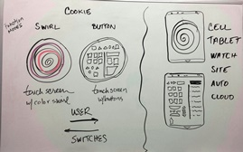

I love color! I feel using color, all kinds of color can be one of the most beautiful and intelligent ways to communicate.
10/28/14
the good, the bad & the ugly

The TV remote was created by Zenith in 1950, and so the couch potato was born. Since then, not much has changed: we still have couch potatoes using a rectangular object to get from point A-to-B by pushing buttons. Surprisingly, the remote's evolved into a more complex, bulkier, uglier device. I think the Zenith 'Three Hundred' was kinda sleek and cool for an early model. Current models are chocked full of buttons - 90% of which never get used. As a matter of fact, after doing a little research, found that the eyes only rest on the area of the remote that matters most to users: up/down/left/right.
10/20-11/14

Trip to the library
This week I checked out books from Decker library on prototyping, infographics, color, design, etc. Since I'm looking to redesign the color and shape of a TV remote, and blog about my journey, I felt I needed to research the elementals.

The good, the bad and the ridiculous
In preparation for our first presentation, I researched a few more recent models. I never realized how ugly and bulky TV remotes really are until this project. The hourglass shape is the newest design feature making it easier to grip and hold
11/3-14
Sketching designs

So this week I sketched out a few ideas for what I thought a 'futuristic' remote would look like. Pretty much the first series of sketches produced what I didn't know has been on the market already. In essence these models are bulky and awkard to hold, and are still shaped list prototype.
11/14 Purchased Sculpey and Premoi clay from MICA Art Supply (natural, red, blue, purple, green)
11/17/14 Class presentation and blog update
11/24
11/30-12/6
12/7-13/14
Collecting, collecting, collecting images that inspire. So I found the work of this amazing artist/engineer/designer Elena Manferdini. Atelier’s uses her architechture to also design clothes, jewelry and furniture using a laser cuttedr to cut designs in fabric, wood, metal and just about anything. Her shapes and patterns remind me of the kind of movement I want to use to reflect transition throughout and between interfaces. Her colorful installations might be perfect for the cover of my blog. https://www.youtube.com/watch?v=Yyc8Bpndyos Elena Manferdini at UIC SOA
12/14/14
While continuing to look for textures and shapes for my interface, I stumbled upon the breathtaking architecture-kisses-ecology work of Orproject. I love their play of color and light! My favorite is Orproject’s Vana “trees” – I love the light emitted from the trees. I installed Orproject here on this page to reflect my creative mood and the movement I want to display throughout the interface design. As you can see its very similar to Elena’s work.
These courtyard trees show how bright colors can be not only non-offensive but actually pleasing to the eye, which is what I want to accomplish with the design of my interface.